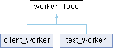

worker_iface Class Referenceabstract
Интерфейс задачи, запускаемой в thread_pool например для прокси start_routine будет конструировать прокси, а add_task додавлять соединение More...
#include <task.hpp>
Inheritance diagram for worker_iface:

Public Member Functions | |
| virtual void | start ()=0 |
| Функция, запускаемая в отдельном потоке | |
| virtual void | stop ()=0 |
| virtual void | add_task (int fd)=0 |
| добавление подзадачи | |
| virtual void | toggle_task (int fd)=0 |
| Добавление аргумента существующему воркеру | |
Detailed Description
Интерфейс задачи, запускаемой в thread_pool например для прокси start_routine будет конструировать прокси, а add_task додавлять соединение
Member Function Documentation
◆ add_task()
|
pure virtual |
добавление подзадачи
Implemented in client_worker, and test_worker.
◆ start()
|
pure virtual |
Функция, запускаемая в отдельном потоке
Implemented in client_worker, and test_worker.
◆ toggle_task()
|
pure virtual |
Добавление аргумента существующему воркеру
Implemented in client_worker, and test_worker.
The documentation for this class was generated from the following file:
- src/task/include/task.hpp
Generated by